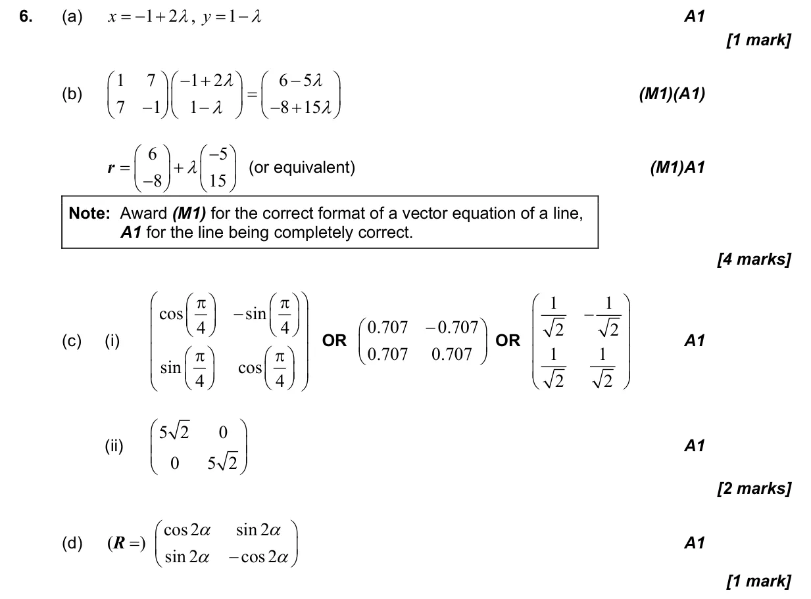
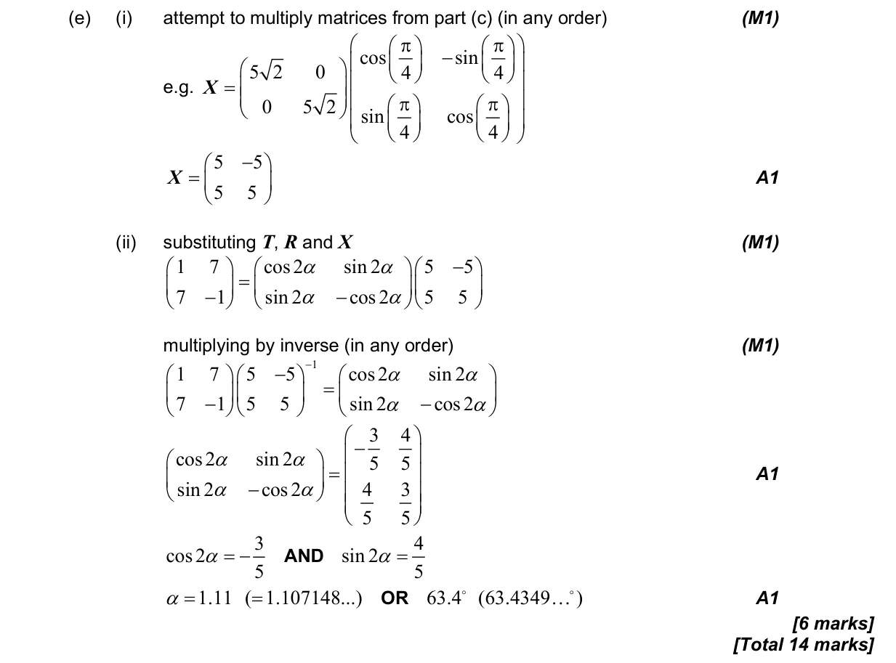

3.9 Matrix transformations of the plane3.11 Vector equation of a line1.14 Matrices: algebra, determinants, inverses and linear systems
Question

Markscheme


14 marks - Nov P2 TZ0 - Mathematics: Applications and Interpretation HL

